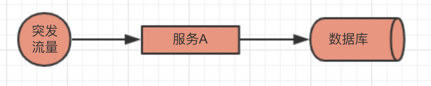
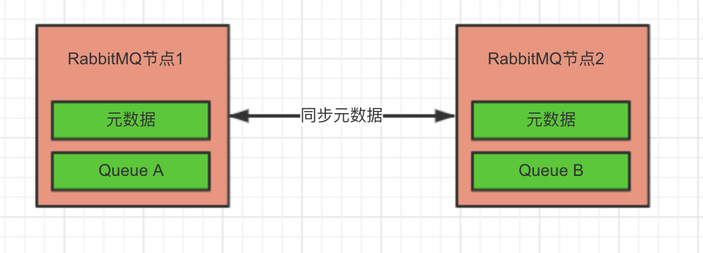
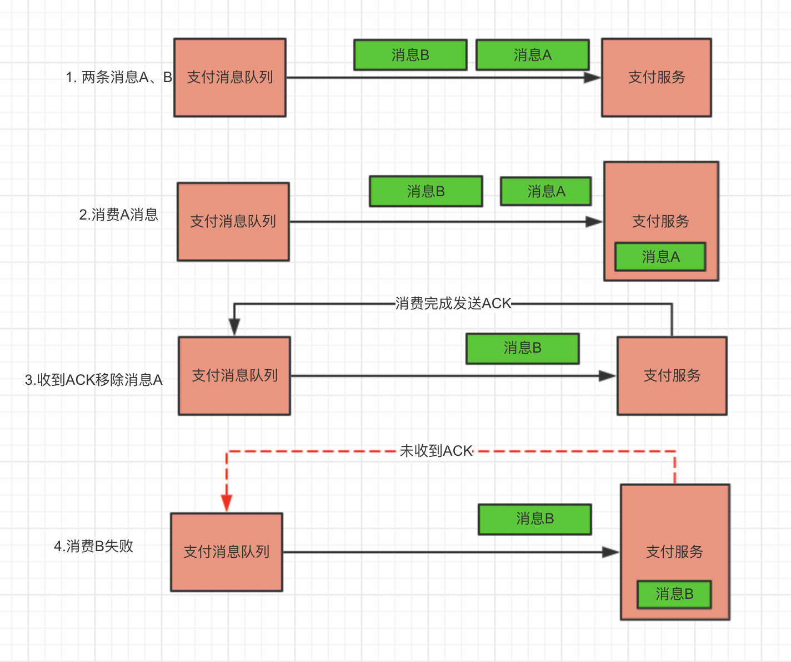

消息队列（Message Queue，简称MQ），其主要用于在复杂的微服务系统中进行消息通信，它的优点可以大致整理成以下几点：
微服务系统业务之间相互依赖，各种调用错综复杂，如果不能良好对服务进行解耦那一个服务的可用性、并发都会受到其他服务的影响。
在没有引用MQ的之前服务调用大概是这些步骤：
图上的A服务是直接调用的，这是没啥问题的，但是服务上线后要迭代更新的麻，这个时候要是服务C的开发人员有点代码小洁癖说：我这个C服务接口命名不太好，我需要重新更新下，当A服务的小哥哥还戴着小耳机听着小歌曲，突然就得改代码了~~。
后来负责服务C的那小哥哥也不好意思了，提出大家一起使用MQ吧，于是A、C的调用就变成下面这个样子了：
服务A不直接调用C而是向消息队列中发送消息（生产者），另一边的C取出队列中的消息（消费者）进行处理，这样A、C就完成了解耦。
举个例子，在没引入MQ之前服务调用多个服务都是同步调用，比如像这样：
服务A要顺序的调用B、C服务来完成业务逻辑如果A->B需要200ms，A->C需要200ms，再加上自身业务逻辑处理可能需要花费500ms，其中有400ms是调用A和B的花费，明明自身100ms就能处理完还白白浪费400ms，不能忍啊于是可以引入MQ做一下改造：
这下有了MQ，A服务只需要发一条消息比如花费50ms，再加上自身业务逻辑的100ms，那整个调用过程只需要花费150ms了，这样对并发和性能都有一定的改善。
突发流量就是互联网很常见的情况，有时候有热点、突发事件，那平常QPS为100的接口，突然提升10-20倍这个时候没有MQ所有流量直接进入服务，这对服务和数据库都是很大的挑战：

再次引入MQ就情况就不一样了，服务A先将请求丢给MQ，然后可以慢慢消费掉：
使用MQ还有很多好处，但是他也会带一些麻烦事。首先就是会降低系统的可用性，比如MQ挂了怎么办呢？所以在引入MQ之前就需要考虑之后带来的哪些问题，不能只看它的好处也需要考虑它不好的地方。比如下面列出的这些问题要如果解决：
下面我们来分析下这些问题。
如果是单机消息队列，一台机器挂了消息队列都就不用了，这是不能接受的，如果是一个消息队列群集，一台机器挂了还有其他机器能正常提供服务，所以要保证消息队列的高可用，我们就需要做消息队列集群。
以RabbitMQ为例它有两种集群模式：
普通模式，RabbitMQ会同步各个节点的数据/状态，但不包括消息队列，默认情况下，消息队列驻留在一个节点上，尽管它们在所有节点上都是可见且可访问的。

在这种模式下，每个节点都有会所有节点的元数据信息，所以当发送消息到队列时，无论连接的是哪一个节点都能正确的发送，但是节点只会同步其他节点的元数据，消息队列的数据还是在一个节点上，如果这个节点挂了那就意味着发消息就会失败，无法保证消息队列的高可用。
默认情况下，RabbitMQ中Queue与Binding、Exchange不一样，它只会存于声明队列的节点中，但是可以选择使Queue跨多个节点进行镜像。
每一个镜像队列由一个Master和一个或多个镜像组成，任何队列的的操作，都会先应用到Master节点上然后传播到多个镜像节点。如果Master节点挂了，最老的镜像节点将会成为新的Master节点。
RabbitMQ有两种集群方法：普通模式、镜像模式，要实现消息队列的高可用可以选一种合适的集群方式来达到，关于RabbitMQ的集群搭建方式，由于篇幅有限这里就不多说，可自行查看 Distributed RabbitMQ文章。
想象下消费者收到重复的消息会发生什么情况，比如订单支付消息，如果支付服务收到两条重复的消息让用户去支付两次，那用户肯定是不愿意的，明明已经支付过了还要支付。

如上图中第四步消费消息B的时候失败了，如果支付服务在做完业务之后，发送ACK之前服务挂了，MQ没有收到ACK，由于消息还存在队列中，服务恢复正常后会再次收到消息，如果支付不做检查那用户就会发生两次支付。
要避免这个重复消费的问题，可以在消费端引入内存、Redis、数据库来保存消息消费记录，根据消息Id来判断消息是否已经被消费过。
假设有订单服务和支付服务，正常流程是用户下单成功，然后向支付服务发送支付消息，这里面就涉及订单服务、支付服务、MQ的交互了，消息丢失可以分为三种情况：
生产者消息丢失，可以使用本地消息表解决、消息确认/重发等方式来解决。以RabbitMQ为例，它有confirm机制，发出去的消息是否入队列，会使用回调的形式告知生产者，生产者收到消息后判断是Ack还是Nak，如果是Nak则重发消息。
此时还会有问题，如果极端情况下订单服务挂了，再次重启后消息就真丢失了，所以最好还是在生产中对消息做持久化，待订单服务恢复后使用Job重新发送消息。
MQ消息丢失一般为未开启持久化，MQ挂了再次重启后消息丢失，所以应当将消息持久化到磁盘中。如果MQ收到消息后在同步到磁盘之前MQ挂了，那磁盘中也没有消息，这样还是会导致消息丢失消息，不过这只是小概率事件。
消费者消息丢失，大都为开启了autoAck选项，消费者收到消息后还未完成处理，此时服务挂了，由于开启了autoAck， MQ会以为此消息已经被成功消费，将消息从队列中移除，而服务恢复过后也不会收到原来的消息了。
有些场景下要保持消息的顺序消费怎么办？比如写Log都是一条条打印出来，如果发到消息队列后出现消费顺序不一致那消息的那日志就会乱掉，给看日志的人带来不必要的麻烦。比如为了加快日志的处理速度使用三个消费都处理日志：
按图上的流程，消费者A、B、C可能分别消费日志1、2、3，这时候就无法保证消息的处理顺序。要保证消息的消费顺序，首先让消息都发送到同一个队列，然后使用一个消费者去处理消息：
这样消息的处理速度就大大降低，要保持消息的顺序，则又想让消息的处理速度不至于太慢，可以引用本地队列：
《架构文摘》每天一篇架构领域重磅好文，涉及一线互联网公司应用架构（高可用、高性 能、高稳定）、大数据、机器学习等各个热门领域。